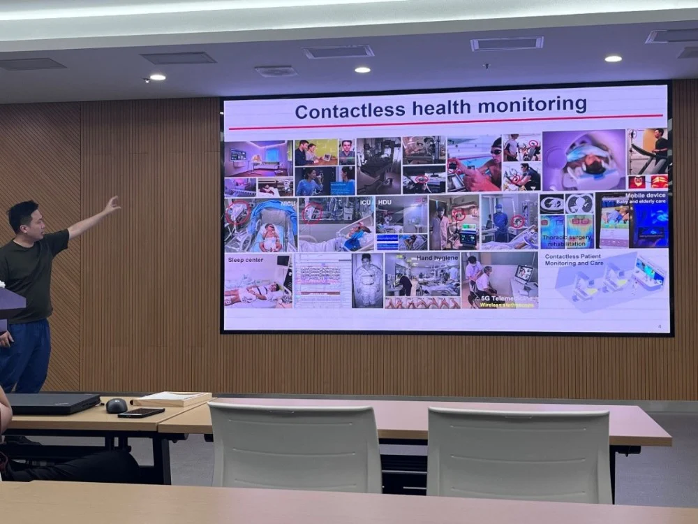
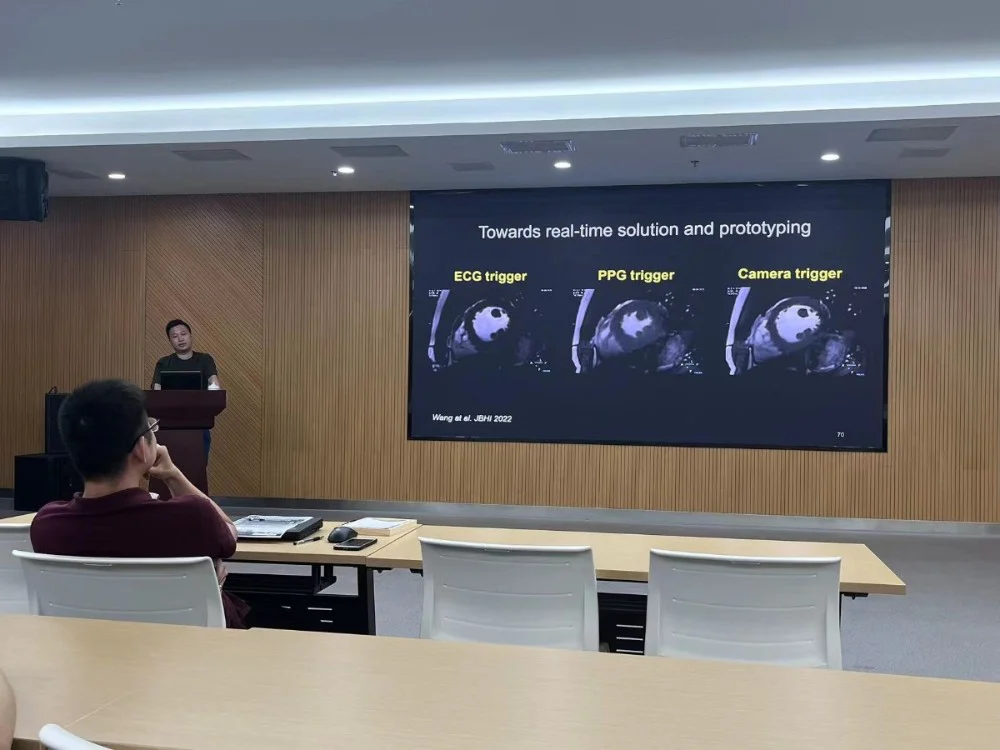
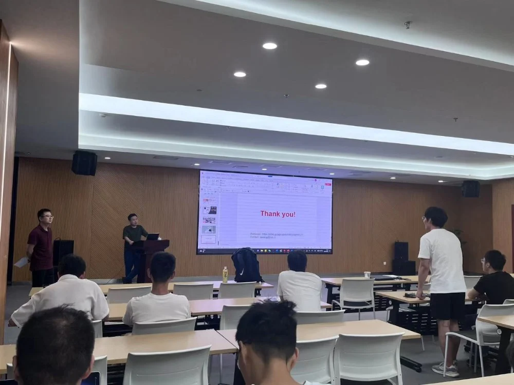

邀请嘉宾：
王文锦副教授 南方科技大学生物医学工程系
2023年6月11日，iMED团队邀请到王文锦副教授，从基于相机的生命检测、临床试验和研究、产品与应用三个角度为同学们介绍了非接触生理监测的算法设计与应用相关研究与成果，让同学们了解到前沿科技对于医疗事业的促进，极大开拓了事业。本次学术分享会由张炯副研究员主持。
王文锦，南方科技大学生物医学工程系，副教授、博导，国家海外优青。曾任荷兰飞利浦研究院研究员，荷兰埃因霍温理工大学助理教授，致力于智能医疗监护技术的研究及转化工作，已实现多件产品的转化及海内外量产销售。21年全职回国后作为项目负责人，主持科技部重点研发专项(青年科学家 )，工信部人工智能医疗器械创新任务，国自然/广东省/深圳市面上，深圳市重大技术攻关等项目。相关研究入选23年广东省两会提案，目前同深圳三院全力打造“远程ICU居家监测系统”。

报告会开始之初，王文锦副教授介绍了团队工作的主要应用场景为医院护理、医学成像、家庭护理、健身训练、移动健康五个方面。接下来，他将本次报告分成三个部分进行分别讲述。首先，他介绍了基于相机的生命检测的原理和应用。他们团队将PPG（Photoplethysmography）技术转化为camera-PPG技术，通过一个光通过皮肤照射光线，而光线在组织中被血液吸收或散射。根据血液的吸收特性，血液量的变化会引起皮肤表面的光吸收量的变化。这些变化通过光传感器（如光电二极管或光敏电阻）捕获并转换为电信号。通过对这些电信号进行分析和处理，可以提取出心率、心率变异性以及血氧饱和度等生理参数,可在健康追踪设备、运动监测设备和医疗监护设备中使用。

接下来，王文锦副教授介绍了团队工作与医院的合作以及相关仪器在医院的使用情况。
他们团队研发的CCTV camera在深圳三院重症医学科（ICU）用于监督80多位病人的生理特征。最后，他介绍了团队开展的临床试验 (ICU/NICU眠中心/胸外科/产科/急诊室等)。

报告结束之后，同学们踊跃地向王文锦副教授提出听会时的疑惑。卢成钢同学、谢起航同学、陈涛同学就非接触式相机检测设备的应用场景进行提问，比如能否将相机嵌入目前已有的运动相机、ICU病人为何要使用非接触式检测方式等，王文锦副教授从非接触式相机检测设备的优势出发，一一解答了同学们的疑惑。李雪菲同学则提出使用光源监测睡眠会不会对人体造成影响，王文锦教授讲解了设备的光源选择问题，并表示利用光源进行病情干预和治疗是他们团队下一个研究的方向。
王文锦教授为同学们带来了一场内容充实、条理清晰的讲座，在座同学都感受到科技对人类医疗事业的影响是革命性的，它推动了医学诊断、治疗和研究的进步，提高了医疗效率和精准性，拓展了疾病预防和管理的可能性，为人类健康带来了巨大的改变和希望，增进了同学们在医学影像事业继续不断探索的动力！